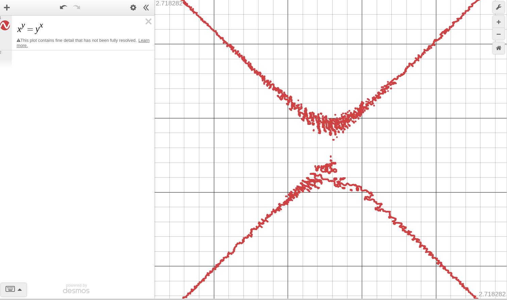
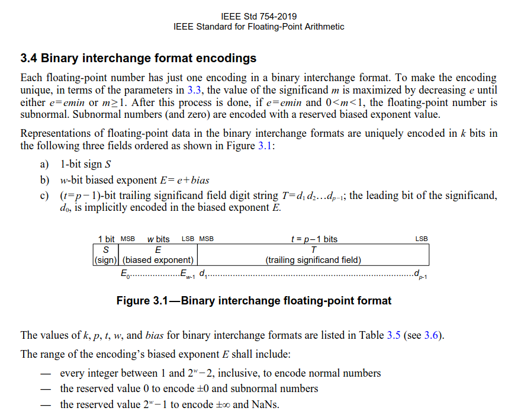

Numerical Computing with Data
Jedediyah Williams, PhD
NCTM 2024, Chicago
Numerical Computing
Numerical Analysis
Scientific Computing
Study of doing math with a computer and the technical details of its implementation.
Numerical Computing
How do we find solutions to problems involving continuous functions using discrete algorithms* and what happens when we try to do that?
* Discrete in numerical precision and constrained by finite memory and by the finite number of steps we are willing to wait for convergence on a close-enough solution.
What type of errors occur, how do they manifest,
and how do they propagate?

Source: Stolen from Dylan Kane.

"IEEE Standard for Floating-Point Arithmetic," in IEEE Std 754-2019 (Revision of IEEE 754-2008) , vol., no., pp.1-84, 22 July 2019, doi: 10.1109/IEEESTD.2019.8766229.
Besides interesting details of implementing math,
I'm interested in:
doing math with computers
There are SO many facets to this... what is math class for? Should we be teaching programming along with mathematics? There are great reasons to NOT teach two things at once, but there are also great reasons why NEVER teaching numerical computing is one of the biggest gaps in all of K-12 mathematics education.
Conjectures
Beyond the classroom (the real world?),
- Way more math is done by non-mathematicians than mathematicians.
Conjectures
Beyond the classroom (the real world?),
- Way more math is done by non-mathematicians than mathematicians.
- Way more mathematics is performed on computers than by humans.
What does real math look like?
I don't know, but it is probably
- Starbucks registers
- JavaScript
- Spreadsheets
- Python scripts
- Graphics cards
- is not like the math that mathematicians do.
- is removed from applications that engineers and scientists care about.
- could, but does not leverage tools that mathematicians, engineers, and scientists use.

Use the heck out of spreadsheets.
Take it to the next level, learn some Octave (MATLAB) and start incorporating computing into computation.
jedediyah.github.io/data/mnist